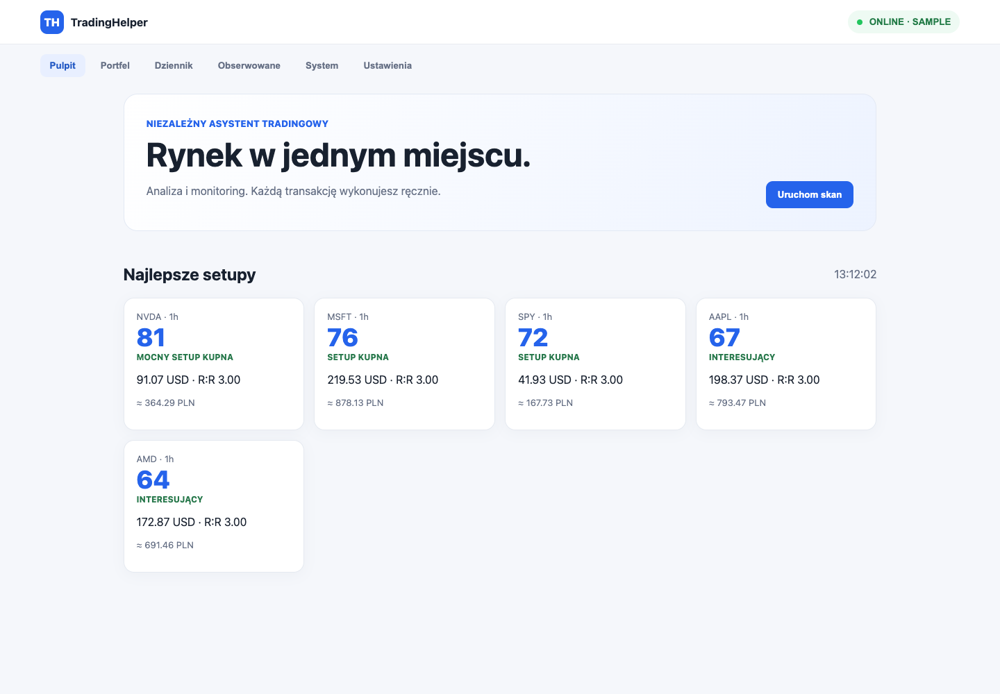

What I am building
TradingHelper is my tool for exploring market data and testing rule-based ideas in PAPER simulation. It does not place orders with a broker, and simulated results are not real investment returns.
Market data
The code supports Twelve Data and an offline sample provider. The provider interface handles quotes, candles, symbols and market status. A SQLite cache, retries and API-credit limits sit between the provider and the rest of the application.
Sample mode generates demonstration data without market requests. The dashboard screenshot on this page uses that mode, not live quotations or real account results.
Scanning and signals
The scanner combines multiple timeframes and rules for trend, momentum, volume, breakouts and pullbacks. It uses indicators including moving averages, RSI, MACD and ATR, and attaches reasons and warnings to its scoring.
The risk layer calculates possible entry, stop, targets, position sizing and cost feasibility. A score describes the result of configured rules; it is not a probability of profit.
Dashboard and alerts
The responsive PWA dashboard shows signals, a watchlist, candles, portfolio history, a trade journal and PAPER controls. Server-Sent Events refresh the interface as backend state changes.
Implemented alerts use ntfy. The backend queues messages in SQLite, limits repeated notifications and retries failed delivery. This is distinct from email, Telegram or browser-push integrations.
What PAPER means here
Simulated buy and sell operations update cash, positions and the transaction ledger together. PAPER state is separate from real broker accounts. Configurable broker cost profiles are cost models, not connections for sending orders.
The repository also includes a separate autonomous PAPER experiment and a backtest engine. These test simulated rules and remain separate from actual investing.
Architecture and running the project
Python provides the scanning and data-processing modules; FastAPI exposes the API and dashboard. SQLite stores application state. The client uses plain JavaScript, HTML and CSS with a PWA manifest and service worker.
The command-line entry point can initialise the database, run a single scan, start the API or run the API with the worker. Linux service configuration is included in the repository. I do not present that configuration as proof of a continuously running public service.
Current status and limits
I present TradingHelper as a developing analysis and simulation project. Market-data quality, delay, costs and configured assumptions affect its results. The portfolio makes no claim of profits or completed live-investment tests.